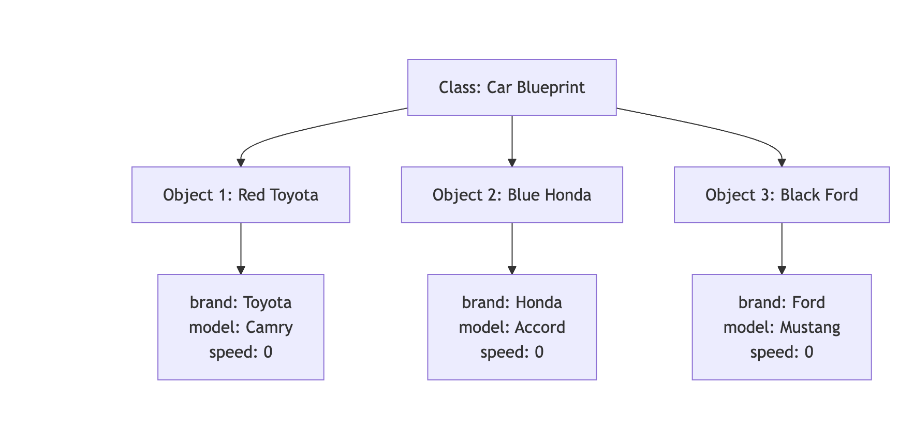
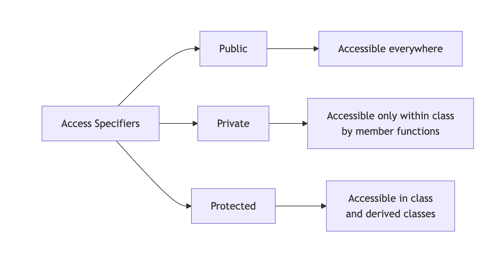

Classes and Objects in C++
Table of Contents
- What is a Class?
- What is an Object?
- Class Members: Attributes and Member Functions
- Access Specifiers
- Creating Objects of a Class
- Summary
1. What is a Class?
A class is a user-defined blueprint or template for creating objects. It defines a data structure that bundles data (attributes) and functions (methods) that operate on that data together.
Real-World Example: Car
Think of a class as a blueprint for a car. The blueprint defines:
- Properties: color, brand, model, speed, fuel level
- Behaviors: start engine, accelerate, brake, turn
Just like a car blueprint isn't an actual car, a class itself isn't an object—it's just the design specification.
class Car {
// Attributes (data members)
string brand;
string model;
int year;
double speed;
// Member functions (methods)
void startEngine() {
cout << "Engine started!" << endl;
}
void accelerate() {
speed += 10;
cout << "Speed: " << speed << " km/h" << endl;
}
};
2. What is an Object?
An object is an instance of a class. It's a concrete entity created from the class blueprint that occupies memory and has actual values.
Relating to Real-World Example
Using our car analogy:
- Class (Car): The blueprint/design document
- Objects: Actual cars manufactured from that blueprint
- Object 1: A red Toyota Camry 2023
- Object 2: A blue Honda Accord 2024
- Object 3: A black Ford Mustang 2022
Each object has its own set of attribute values but shares the same structure and behaviors defined by the class.
Car myCar; // Object 1
Car yourCar; // Object 2
Car rentalCar; // Object 3

3. Class Members: Attributes and Member Functions
3.1 Attributes (Data Members)
Attributes are variables that hold the state or properties of an object. They represent the characteristics of the object.
Examples:
- For a
Carclass:brand,model,year,speed,fuelLevel - For a
Studentclass:name,rollNumber,grade,age - For a
BankAccountclass:accountNumber,balance,accountHolder
3.2 Member Functions (Methods)
Member functions are functions defined inside a class that operate on the object's data. They represent the behaviors or actions an object can perform.
Types of Member Functions:
-
Functions that modify object state
void accelerate() { speed += 10; } -
Functions that retrieve information
double getSpeed() { return speed; } -
Functions that perform operations
void displayInfo() { cout << brand << " " << model << endl; }
Complete Example
class BankAccount {
// Attributes
string accountHolder;
long accountNumber;
double balance;
// Member Functions
void deposit(double amount) {
balance += amount;
cout << "Deposited: $" << amount << endl;
}
void withdraw(double amount) {
if (balance >= amount) {
balance -= amount;
cout << "Withdrawn: $" << amount << endl;
}
}
double getBalance() {
return balance;
}
};
4. Access Specifiers
Access specifiers control the accessibility of class members from outside the class. C++ provides three access specifiers:
4.1 Public
Members declared as public are accessible from anywhere in the program.
class Car {
public:
string brand; // Can be accessed from anywhere
void startEngine() { // Can be called from anywhere
cout << "Engine started!" << endl;
}
};
Usage:
Car myCar;
myCar.brand = "Toyota"; // ✓ Allowed
myCar.startEngine(); // ✓ Allowed
4.2 Private
Members declared as private are only accessible within the class itself. This is the default access level in C++.
Key Points:
- Private data members cannot be accessed directly from outside the class
- Private data members can be accessed by member functions within the same class
- Member functions can read, modify, and manipulate private data members
class BankAccount {
private:
double balance; // Cannot be accessed directly from outside
void updateLog() { // Cannot be called from outside
// Internal logging function
}
public:
void deposit(double amount) {
balance += amount; // ✓ Member function CAN access private data
updateLog(); // ✓ Member function CAN call private function
}
double getBalance() {
return balance; // ✓ Member function CAN access private data
}
void showDetails() {
cout << "Balance: $" << balance << endl; // ✓ Accessing private member
updateLog(); // ✓ Calling private function
}
};
Usage:
BankAccount account;
account.balance = 1000; // ✗ Error: balance is private, cannot access from outside
account.updateLog(); // ✗ Error: updateLog is private, cannot call from outside
account.deposit(1000); // ✓ Allowed: deposit is public
account.getBalance(); // ✓ Allowed: getBalance is public (internally accesses private balance)
Summary:
- Private members are hidden from outside the class
- Private members are accessible to all member functions inside the class
- This provides data encapsulation and security
4.3 Protected
Members declared as protected are accessible within the class and by derived (child) classes.
class Vehicle {
protected:
int speed; // Accessible in Vehicle and its derived classes
public:
void setSpeed(int s) {
speed = s;
}
};
Note: Protected access specifier is primarily used in inheritance and will be discussed in detail in the Inheritance section.
4.4 Access Specifier Comparison

4.5 When to Use Which Access Specifier
| Access Specifier | When to Use | Example Use Cases | Benefits |
|---|---|---|---|
| Public | For interfaces that need to be accessed from anywhere | • Getter/Setter methods • Public utility functions • Methods that define class behavior | • Easy access • Clear interface • User-friendly |
| Private | For internal implementation details that should be hidden | • Data members (variables) • Helper/utility functions • Internal calculations • Sensitive data | • Data protection • Encapsulation • Security • Prevents accidental modification |
| Protected | For members that should be accessible to derived classes | • Attributes shared with child classes • Functions used by inheritance hierarchy | • Supports inheritance • Controlled access in hierarchy • Flexibility for derived classes |
Best Practice Example:
class Student {
private:
// Private: Internal data that should be protected
string name;
int rollNumber;
float marks;
int age;
// Private: Internal helper function
bool validateMarks(float m) {
return (m >= 0 && m <= 100);
}
protected:
// Protected: For use in derived classes (e.g., GraduateStudent)
string department;
public:
// Public: Interface for outside world to interact with the class
void setName(string n) {
name = n;
}
string getName() {
return name;
}
void setMarks(float m) {
if (validateMarks(m)) { // Using private helper function
marks = m;
}
}
float getMarks() {
return marks;
}
void displayInfo() {
cout << "Name: " << name << ", Roll: " << rollNumber
<< ", Marks: " << marks << endl;
}
};
Decision Guide:
- Start with private - Make everything private by default
- Expose what's needed - Make only necessary methods public
- Use protected for inheritance - When planning class hierarchies
- Never expose data directly - Use getter/setter methods instead
5. Creating Objects of a Class
There are multiple ways to create objects in C++. Here are the various approaches:
5.1 Static Allocation (Stack)
Objects are created on the stack and automatically destroyed when they go out of scope.
// Syntax: ClassName objectName;
Car myCar; // Object created on stack
Student student1; // Another object
BankAccount account; // One more object
Characteristics:
- Memory allocated on the stack
- Automatic destruction when scope ends
- Faster allocation
- Limited by stack size
5.2 Dynamic Allocation (Heap)
Objects are created on the heap using the new keyword and must be manually deleted.
// Syntax: ClassName* objectName = new ClassName;
Car* carPtr = new Car; // Object created on heap
Student* studentPtr = new Student;
// Using the object
carPtr->startEngine();
// Must manually delete to free memory
delete carPtr;
delete studentPtr;
Characteristics:
- Memory allocated on the heap
- Manual memory management required
- Slower allocation than stack
- Can allocate larger objects
- Persists until explicitly deleted
5.3 Array of Objects
You can create multiple objects using arrays.
Static Array:
// Array of objects on stack
Car cars[5]; // Creates 5 Car objects
cars[0].startEngine();
cars[1].accelerate();
Dynamic Array:
// Array of objects on heap
Car* carArray = new Car[10]; // Creates 10 Car objects
carArray[0].startEngine();
// Must delete the array
delete[] carArray;
5.4 Creating Objects with Different Access
class Example {
private:
int privateData;
public:
int publicData;
void display() {
cout << "Example object created!" << endl;
}
};
// Creating and using objects
Example obj1; // Stack allocation
obj1.publicData = 100; // Accessing public member
obj1.display(); // Calling public method
// obj1.privateData = 50; // ✗ Error: Cannot access private member
Example* obj2 = new Example; // Heap allocation
obj2->publicData = 200;
obj2->display();
delete obj2;
5.5 Comparison: Stack vs Heap Allocation

Complete Example: Different Ways to Create Objects
#include <iostream>
using namespace std;
class Rectangle {
private:
double length;
double width;
public:
void setDimensions(double l, double w) {
length = l;
width = w;
}
double getArea() {
return length * width;
}
void display() {
cout << "Rectangle: " << length << " x " << width
<< " = " << getArea() << " sq units" << endl;
}
};
int main() {
// Method 1: Stack allocation
Rectangle rect1;
rect1.setDimensions(5.0, 3.0);
rect1.display();
// Method 2: Heap allocation
Rectangle* rect2 = new Rectangle;
rect2->setDimensions(4.0, 6.0);
rect2->display();
delete rect2; // Don't forget to delete!
// Method 3: Array of objects
Rectangle rooms[3];
rooms[0].setDimensions(10.0, 12.0);
rooms[1].setDimensions(8.0, 10.0);
rooms[2].setDimensions(6.0, 8.0);
for (int i = 0; i < 3; i++) {
cout << "Room " << i + 1 << ": ";
rooms[i].display();
}
return 0;
}
Summary
- Class: A blueprint that defines structure and behavior
- Object: An instance of a class with actual data
- Attributes: Variables that store object properties
- Member Functions: Functions that define object behaviors (can access private members)
- Access Specifiers: Control visibility (public, private, protected)
- Object Creation: Can be done on stack or heap, as single objects or arrays
This foundation prepares you for more advanced topics like constructors, destructors, and inheritance!